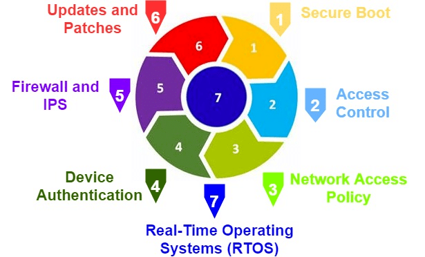

Disainiliselt turvaline tähendab tarkvaratehnikas, et tarkvaratooted ja võimalused on loodud põhimõtteliselt turvaliseks.
Alternatiivseid turvastrateegiaid, taktikaid ja mustreid arvestatakse tarkvara kavandamise alguses ning arhitektuur valib välja ja jõustab parimad ning neid kasutatakse arendajatele juhtpõhimõtetena.[1] Samuti soovitatakse kasutada strateegilisi disainimustreid, millel on turvalisusele kasulik mõju, kuigi need kujundusmustrid ei olnud algselt välja töötatud turvalisust silmas pidades.[2]
Secure by Design on muutumas üha enam peamiseks arendusmeetodiks tarkvarasüsteemide turvalisuse ja privaatsuse tagamiseks. Selle lähenemisviisi puhul arvestatakse turvalisust ja see on süsteemi sisse ehitatud igas kihis ning see algab tugevast arhitektuurilisest disainist. Turvaarhitektuurse disainilahenduse otsused põhinevad tuntud turvastrateegiatel, taktikatel ja mustritel, mis on määratletud kui korduvkasutatavad tehnikad konkreetsete kvaliteediprobleemide saavutamiseks. Turvataktika/-mustrid pakuvad lahendusi vajaliku autentimise, autoriseerimise, konfidentsiaalsuse, andmete terviklikkuse, privaatsuse, vastutuse, kättesaadavuse, ohutuse ja tagasilükkamise nõuete jõustamiseks isegi siis, kui süsteem on rünnaku all.[3] Tarkvarasüsteemi turvalisuse tagamiseks ei ole oluline mitte ainult kavandatud robustne turbearhitektuur, vaid ka tarkvaraarenduse uuendatud turbestrateegiate, -taktikate ja -mustrite kaardistamine, et säilitada turvalisuse püsivus.
